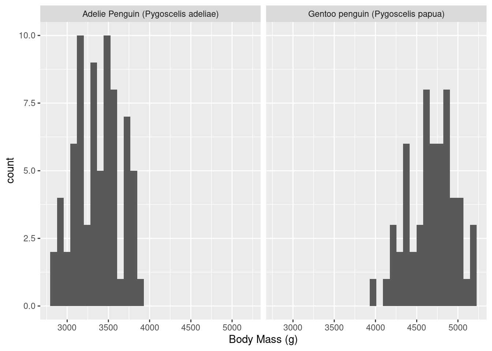

── Attaching core tidyverse packages ──────────────────────── tidyverse 2.0.0 ──
✔ dplyr 1.1.2 ✔ readr 2.1.4
✔ forcats 1.0.0 ✔ stringr 1.5.0
✔ ggplot2 3.4.2 ✔ tibble 3.2.1
✔ lubridate 1.9.2 ✔ tidyr 1.3.0
✔ purrr 1.0.1
── Conflicts ────────────────────────────────────────── tidyverse_conflicts() ──
✖ dplyr::filter() masks stats::filter()
✖ dplyr::lag() masks stats::lag()
ℹ Use the conflicted package (<http://conflicted.r-lib.org/>) to force all conflicts to become errors
library(palmerpenguins)
cat(paste(R.version$version.string, "\n"))
R version 4.3.1 (2023-06-16)
read the penguins data from a csv file
penguins <-read_csv("data/penguins-raw.csv")
Rows: 344 Columns: 17
── Column specification ────────────────────────────────────────────────────────
Delimiter: ","
chr (9): studyName, Species, Region, Island, Stage, Individual ID, Clutch C...
dbl (7): Sample Number, Culmen Length (mm), Culmen Depth (mm), Flipper Leng...
date (1): Date Egg
ℹ Use `spec()` to retrieve the full column specification for this data.
ℹ Specify the column types or set `show_col_types = FALSE` to quiet this message.
print the number of rows and columns in the data frame
studyName Sample Number Species Region
0 0 0 0
Island Stage Individual ID Clutch Completion
0 0 0 0
Date Egg Culmen Length (mm) Culmen Depth (mm) Flipper Length (mm)
0 2 2 2
Body Mass (g) Sex Delta 15 N (o/oo) Delta 13 C (o/oo)
2 11 14 13
Comments
290
`summarise()` has grouped output by 'Sex'. You can override using the `.groups`
argument.
# A tibble: 3 × 4
# Groups: Sex [3]
Sex Adelie Penguin (Pygosce…¹ Chinstrap penguin (P…² Gentoo penguin (Pygo…³
<fct> <dbl> <dbl> <dbl>
1 FEMALE 3369. 3527. 4680.
2 MALE 4043. 3939. 5485.
3 <NA> NA NA NA
# ℹ abbreviated names: ¹`Adelie Penguin (Pygoscelis adeliae)`,
# ²`Chinstrap penguin (Pygoscelis antarctica)`,
# ³`Gentoo penguin (Pygoscelis papua)`
plot a histogram of “Body Mass (g)” for female Adelie and Gentoo penguins
penguins |>filter(Species %in%c("Adelie Penguin (Pygoscelis adeliae)", "Gentoo penguin (Pygoscelis papua)"), Sex =="FEMALE") |>ggplot(aes(x =`Body Mass (g)`)) +geom_histogram(bins =30) +facet_wrap(~Species)

penguins |>filter(Species %in%c("Adelie Penguin (Pygoscelis adeliae)", "Gentoo penguin (Pygoscelis papua)"), Sex =="FEMALE") |>ggplot(aes(x =`Body Mass (g)`)) +geom_histogram(bins =30) +facet_wrap(~Species)
excel files
One can also work with excel files. You need the readxl library.
library("readxl")
As an example, we use an excel spreadsheet violent crime data from the FBI.
read the 2019 crime data, and remove D.C.
ViolentCrime2019 <-read_excel("data/Violent Crime-by state-2019-table-5.xls",sheet =1, range ="A4:M514", trim_ws =TRUE )
New names:
• `` -> `...3`
ViolentCrime2019
# A tibble: 510 × 13
State Area ...3 Population `Violent \ncrime1` Murder and \nnonnegl…¹ Rape2
<chr> <chr> <chr> <chr> <dbl> <dbl> <dbl>
1 ALABA… Metr… <NA> 3728978 NA NA NA
2 <NA> <NA> Area… 0.7660000… 12880 182 1141
3 <NA> <NA> Esti… 1 19951 300 1542
4 <NA> Citi… <NA> 528518 NA NA NA
5 <NA> <NA> Area… 0.8930000… 3327 36 297
6 <NA> <NA> Esti… 1 3541 37 310
7 <NA> Nonm… <NA> 645689 NA NA NA
8 <NA> <NA> Area… 0.7239999… 874 13 148
9 <NA> <NA> Esti… 1 1554 21 216
10 <NA> Stat… <NA> 4903185 25046 358 2068
# ℹ 500 more rows
# ℹ abbreviated name: ¹`Murder and \nnonnegligent \nmanslaughter`
# ℹ 6 more variables: Robbery <dbl>, `Aggravated \nassault` <dbl>,
# `Property \ncrime` <dbl>, Burglary <dbl>, `Larceny-theft` <dbl>,
# `Motor \nvehicle \ntheft` <dbl>
Notice that the third column got a “made-up” name (‘..3’) and the other column names are a bit weird, they have newlines in them and also in some case footnotes. Let’s clean this up. First we replace all of the newlines and spaces by underlines in the column names.
# A tibble: 510 × 13
State Area ...3 Population Violent_crime1 Murder_and_nonneglig…¹ Rape2
<chr> <chr> <chr> <chr> <dbl> <dbl> <dbl>
1 ALABAMA Metropo… <NA> 3728978 NA NA NA
2 <NA> <NA> Area… 0.7660000… 12880 182 1141
3 <NA> <NA> Esti… 1 19951 300 1542
4 <NA> Cities … <NA> 528518 NA NA NA
5 <NA> <NA> Area… 0.8930000… 3327 36 297
6 <NA> <NA> Esti… 1 3541 37 310
7 <NA> Nonmetr… <NA> 645689 NA NA NA
8 <NA> <NA> Area… 0.7239999… 874 13 148
9 <NA> <NA> Esti… 1 1554 21 216
10 <NA> State T… <NA> 4903185 25046 358 2068
# ℹ 500 more rows
# ℹ abbreviated name: ¹Murder_and_nonnegligent_manslaughter
# ℹ 6 more variables: Robbery <dbl>, Aggravated_assault <dbl>,
# Property_crime <dbl>, Burglary <dbl>, `Larceny-theft` <dbl>,
# Motor_vehicle_theft <dbl>
Next we pull out the names from taking the state column, omitting the “NA” values, and treating this as strings. We also want a list for later work, not a tibble.
States <- ViolentCrime2019 |>select("State") |>drop_na()States = States$StateStates